已导出 PNG 证据（evidence/）
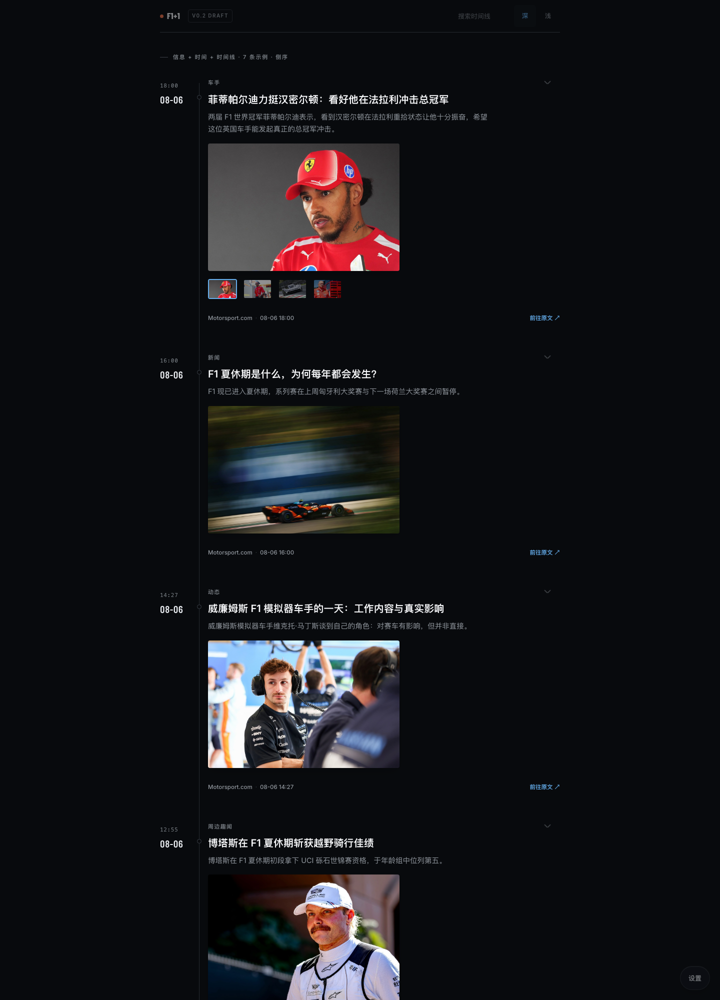
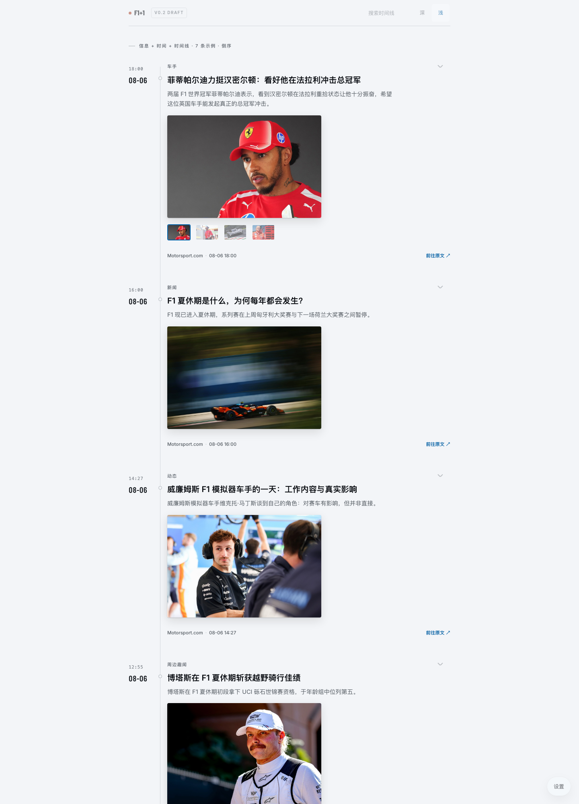
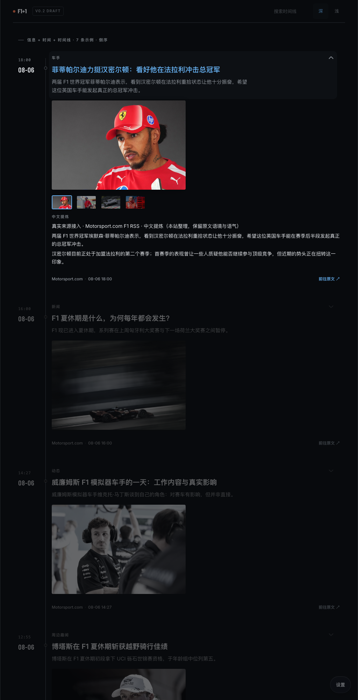
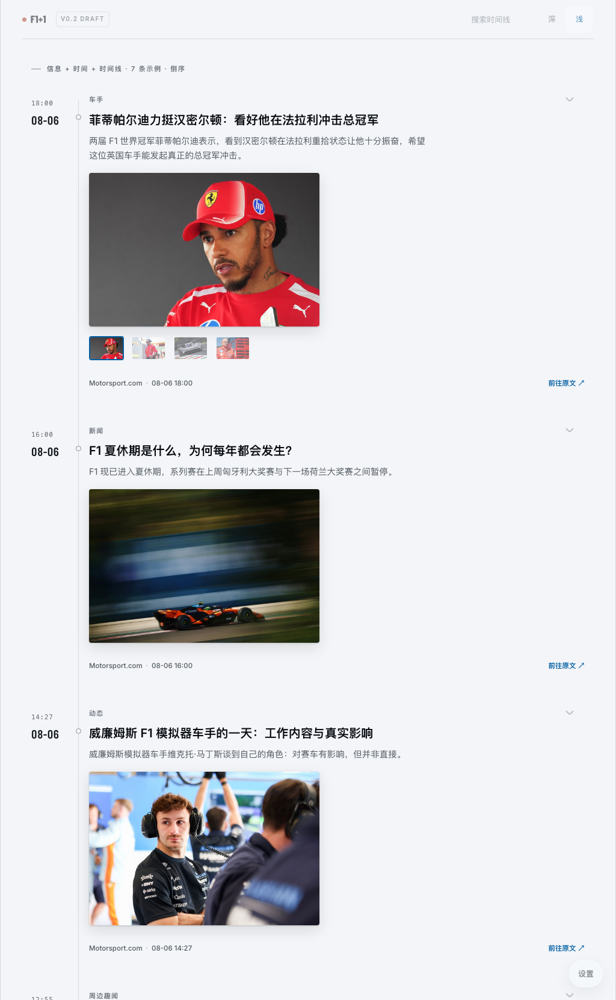
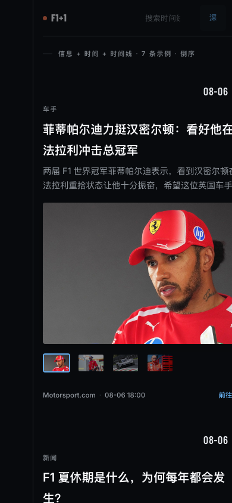
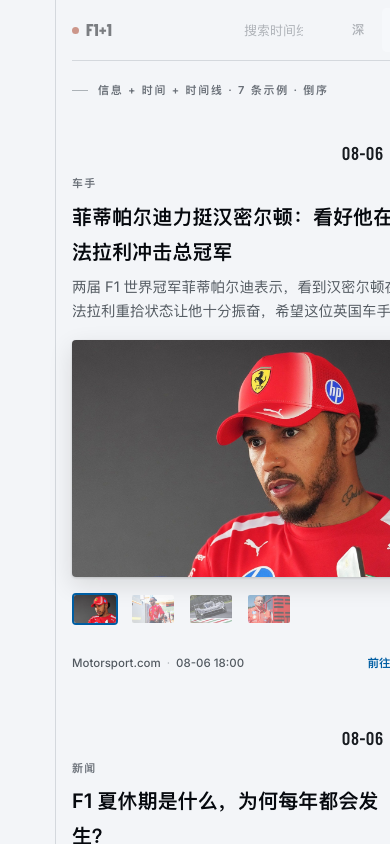
v0.2b 修订 · 媒体区主图放大 + 右侧竖向缩略图 · lightbox 打开态
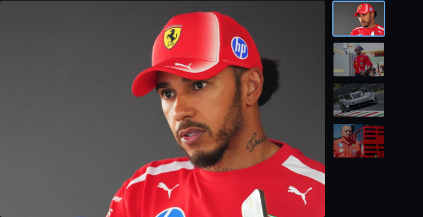
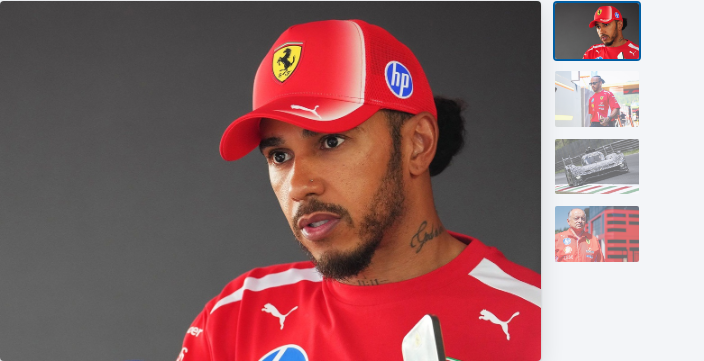
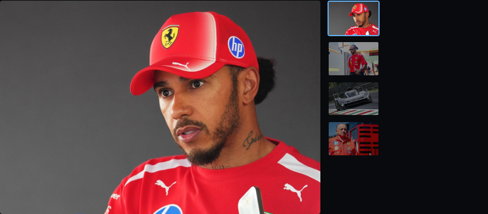
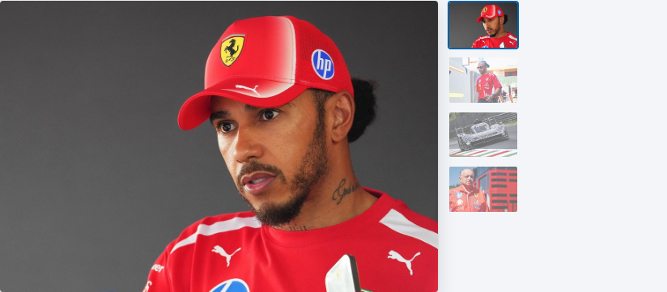
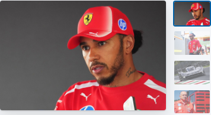
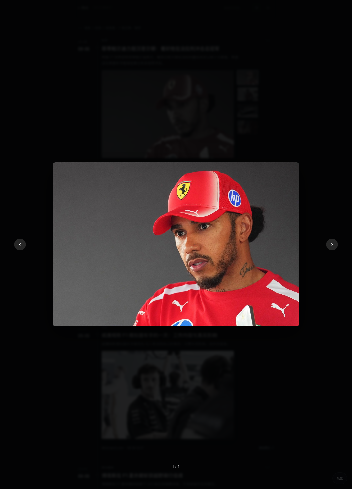
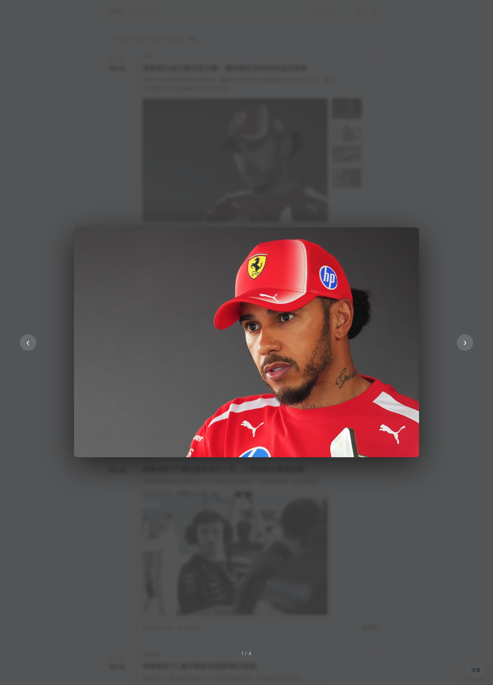
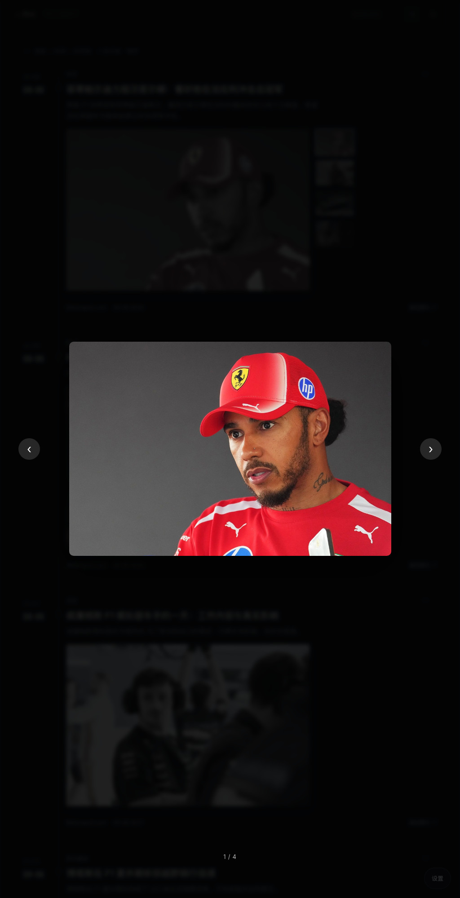
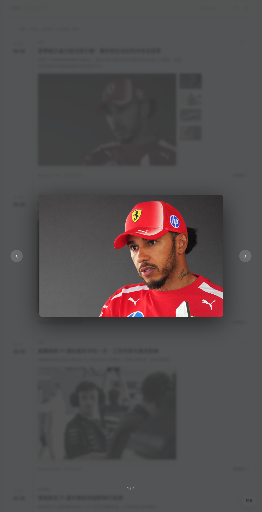
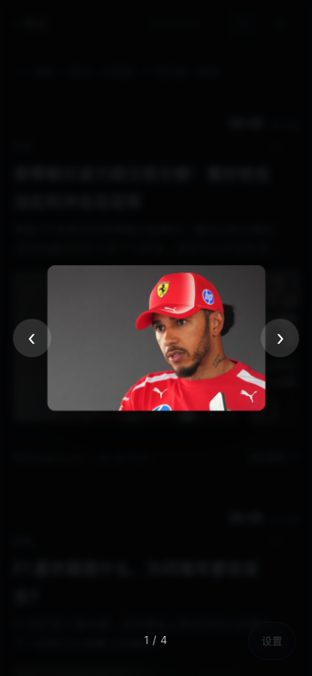
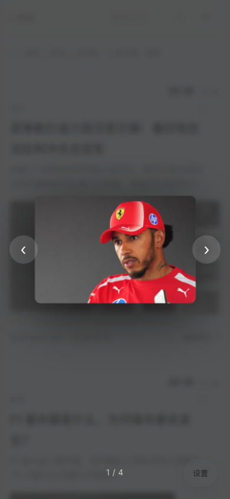
交互态 / 状态补充预览（同源 iframe 实况）
evidence/v0.2-{dark,light}-{1440,1024,390}.png）为最终导出证据；
「交互态 / 状态」为 index.html 的同源 iframe 实况预览，URL 参数 #theme / #width / #state / #open / #search / #reveal 驱动渲染，也可直接用浏览器打开并导出 PNG。
悬停浮现态 / 搜索 / 状态 / 就地展开的历史导出另存于顶层 timeline-*.png（1440/1024/390）。
v0.2b 修订证据（媒体区 + lightbox 打开态，12 张）见上方 evidence/v0.2b-*.png 与 evidence/v0.2b-lb-*.png；
修订点为：主图限高 255px → 360px（移动 280px）、缩略图改到主图右侧竖向列（桌面 88px / 移动 64px 固定宽）、lightbox 新增触摸/鼠标横向滑动翻页（左滑下一张 / 右滑上一张，48px 阈值），保留 Esc / 方向键 / ‹› 按钮 / 计数 / 点击关闭。
「悬停浮现」：低对比常驻 → hover/focus 全对比 + 微放大 1.04（150ms ease-out）；触屏提升基准对比；reduced-motion 取消放大。